One sequence in notebook display order, including graphs and tables; literal suffix 0111.
Visual 1: A small corpus, chosen before the queries
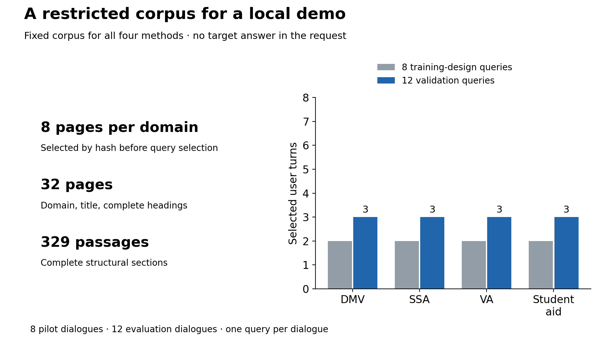
We search 32 pages and 329 complete passages. The pilot uses 8 training queries and evaluation has 12 queries. Domain balance makes the design easy to inspect; it does not make twelve queries representative of all RAG workloads.
Visual 2: A decision model versus an ordinary LLM
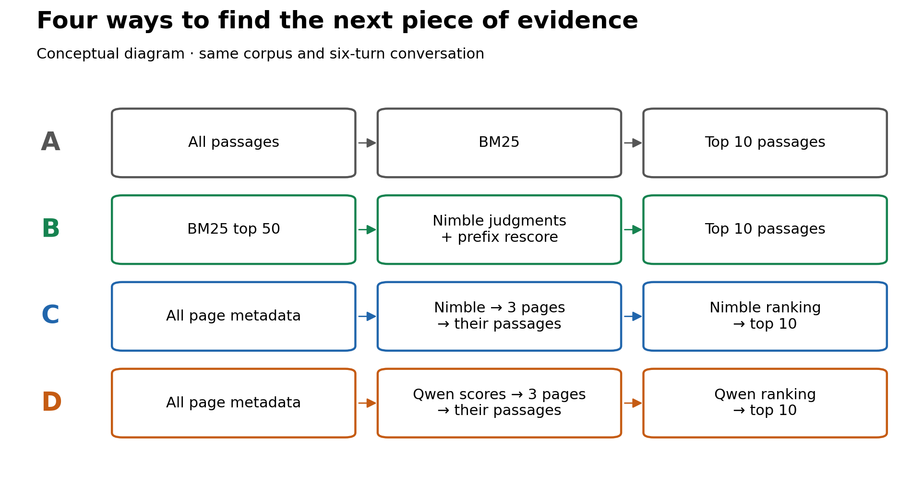
A→B adds judging/rescoring; B→C changes discovery, candidate pools and workload; C→D replaces the model and scoring adapter under common navigation rules. The initial page corpus matches, but selected pages and downstream work can differ. These are end-to-end system comparisons, not causal isolation of architecture or training.
Visual 3: Keep the test honest
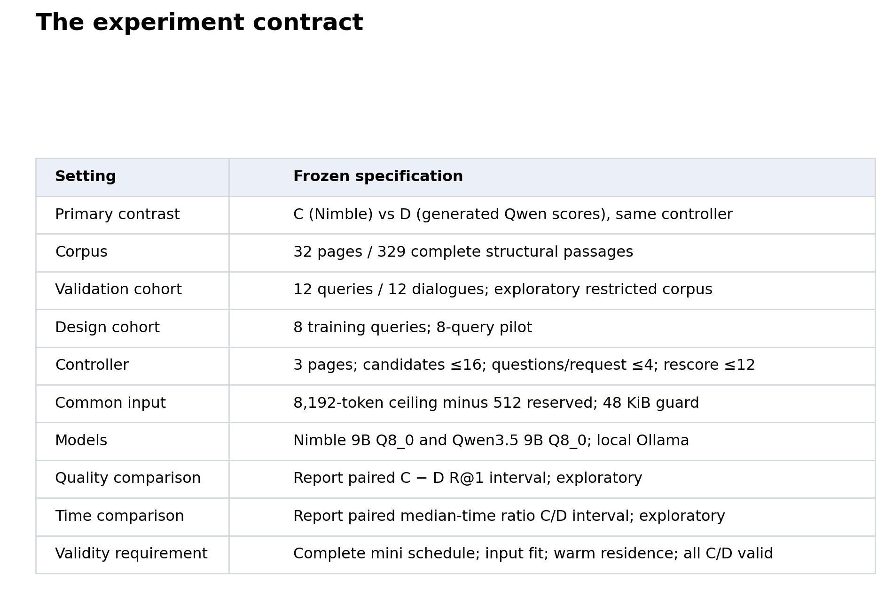
This table is our contract with the experiment: corpus, cohort, models and resource limits are fixed. The mini study is explicitly exploratory. A successful run does not by itself establish a retrieval-quality or efficiency win.
Visual 4: Keep the test honest
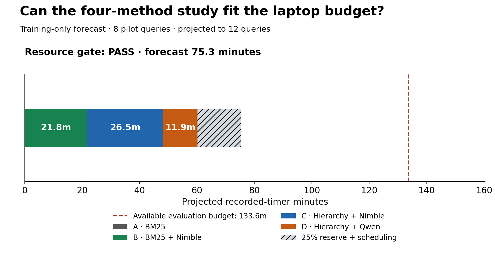
The training pilot forecast 75.3 evaluation minutes, including reserve, against 133.6 minutes remaining. Resource gate: PASS. This was a forecast made before evaluation, not a new measurement during replay.
Visual 5: What happened on the laptop?
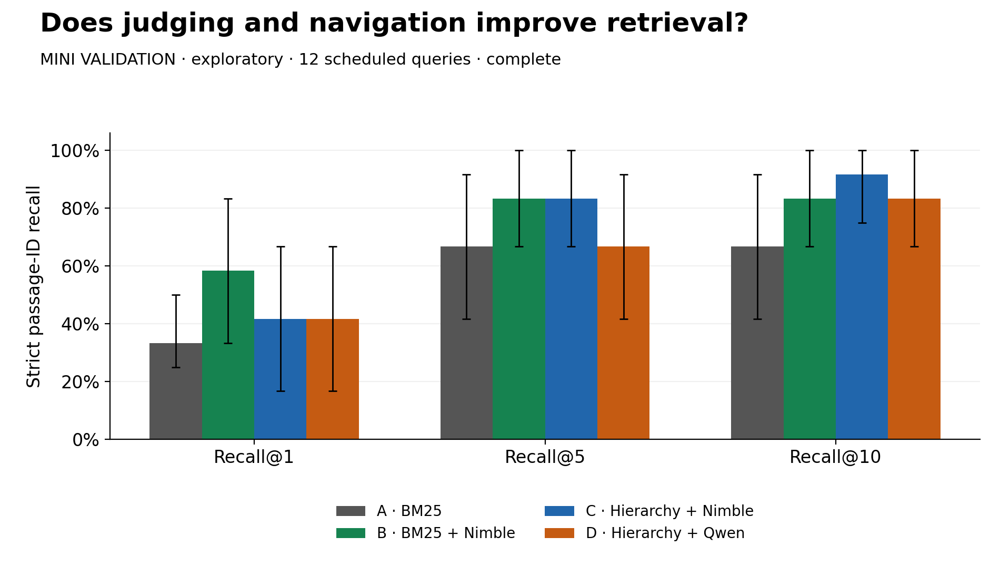
At rank one, A: 33.33%; B: 58.33%; C: 41.67%; D: 41.67%. Read Recall@1 and Recall@10 separately: a method can return useful evidence in its bundle without choosing it first. The error bars are exploratory dialogue-bootstrap intervals, not proof of a universal ordering. Exact normalized-text R@1 is A: 33.33%; B: 58.33%; C: 50.00%; D: 50.00%; this sensitivity leaves strict-ID scoring primary and does not establish equivalence or an efficiency win.
Visual 6: What happened on the laptop?
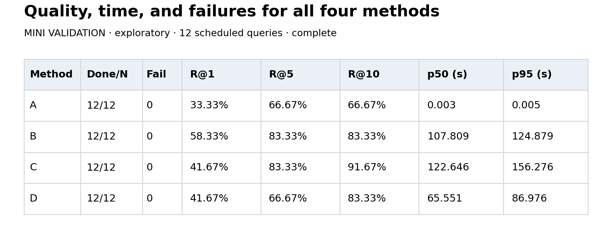
Each method attempted A: 12/12, B: 12/12, C: 12/12, D: 12/12. The table puts completed counts, failures, strict recall and full-query latency together. For scale, the BM25 median is 0.003 seconds; model-assisted retrieval takes much longer here.
Visual 7: What happened on the laptop?
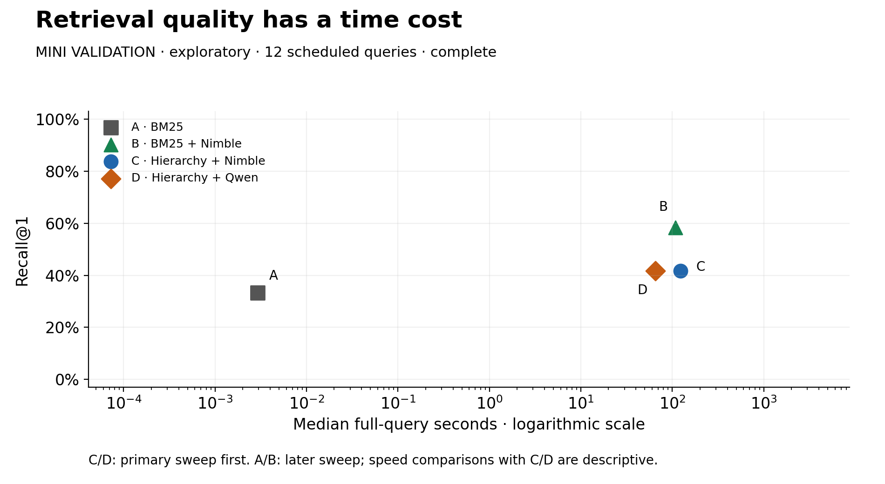
Left is faster, higher is better. The logarithmic horizontal axis matters: milliseconds and minutes occupy the same plot. A/B were measured in the later sweep, so their speed comparisons with C/D are descriptive. The picture does not include answer-generation quality or a modern dense retrieval baseline.
Visual 8: Does the decision model earn its place?
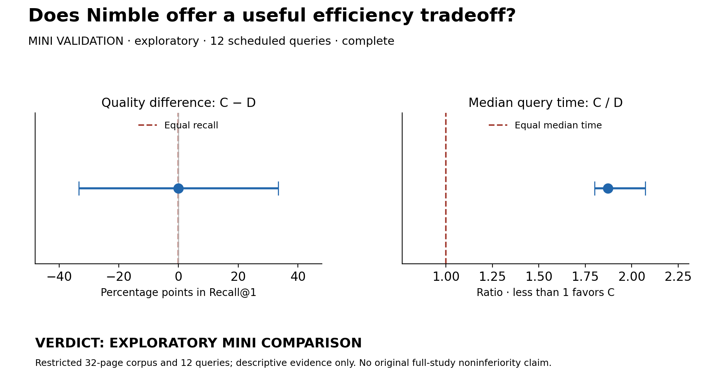
C−D Recall@1 is 0.0 percentage points, with a 95% interval from -33.3 to 33.3. The median-time ratio C/D is 1.87 (95% interval 1.80–2.07); a ratio above one means Nimble took longer. Equal observed recall is not evidence of equivalence. The interval resamples queries from one captured run, not repeated runs or hardware. Different selected branches and workloads are included in this end-to-end time comparison.
Visual 9: Does the decision model earn its place?
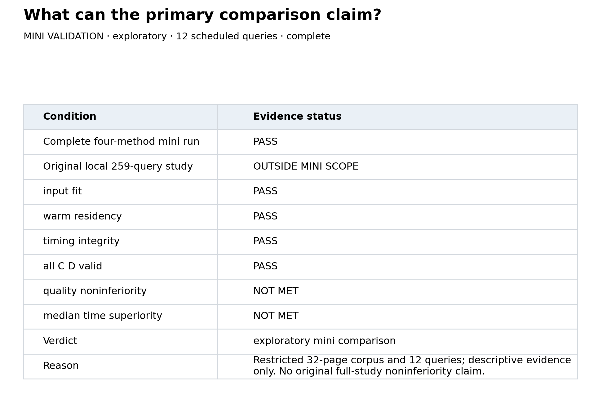
The recorded verdict is **exploratory mini comparison**. Completion of all four mini methods is distinct from running our original local 259-query study. Input fit, warm residency and timing integrity describe execution validity; they do not turn an uncertain quality comparison into a win.
Visual 10: Where did the hierarchy lose the answer?
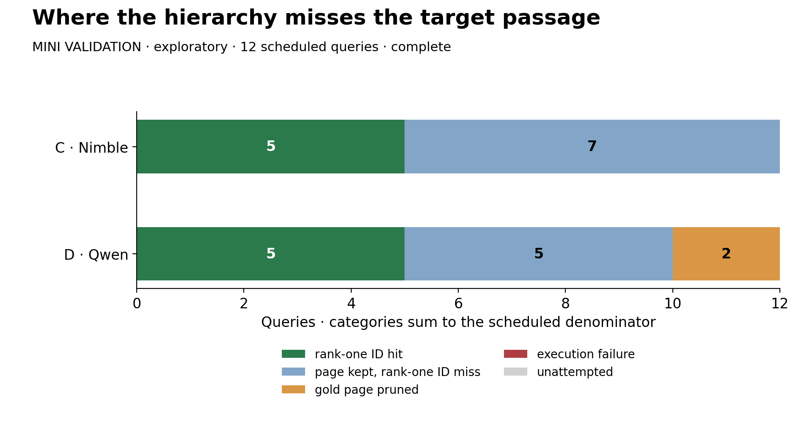
Nimble pruned the gold page on 0 queries; Qwen did so on 2. Retaining a page is only the first hurdle: Nimble then had 7 rank-one structural-ID misses on retained pages, and Qwen 5. An ID miss may still match the target text.
**Score resolution:** C made 275 scored request groups and D 235. Excluding singletons, D had all-equal scores in 177/234 groups and some tie in 231/234; C had 0/273 all-equal groups and 0/273 groups with any tie. Equal scores fall back to candidate-ID order. These are dependent request groups, not extra evaluation queries; ties can be appropriate for irrelevant candidates. They describe this adapter, not a general ordinary-LLM limitation or a cause of its speed.
Visual 11: Where did the hierarchy lose the answer?
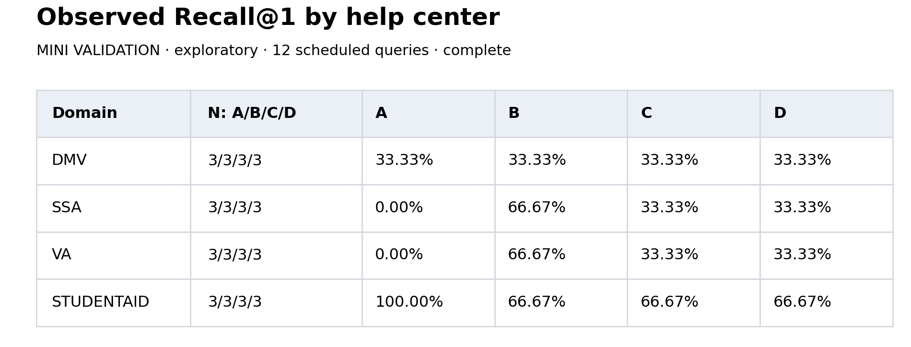
The domain breakdown is an inspection aid, not four small leaderboards. With three validation queries per domain, a single changed answer moves recall by 33.3 percentage points. Do not choose a domain-specific winner from these counts.
Visual 12: Where did the hierarchy lose the answer?
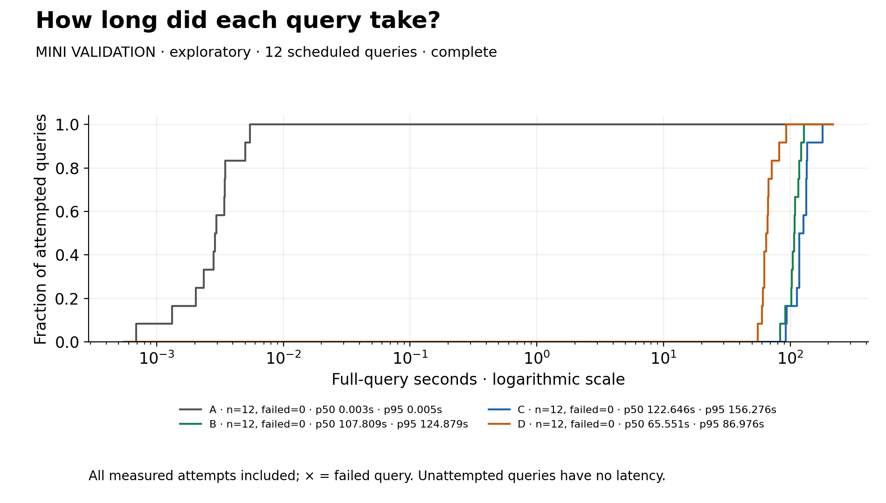
Every attempted query contributes to its curve, including any failed attempt. The right tail exposes slower cases that a median hides. The curves reuse original inference durations; the time taken to redraw them is not a speed benchmark.